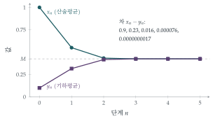

STEP II 2024, 문제 8
다음으로 넘어가기 전에 문제를 먼저 읽어 보자. 이 문제는 OCR에서 내려받을 수 있는 2024년 STEP 문제지 모음(zip 파일)의 STEP II 문제지에 있다: www.ocr.org.uk/Images/725753-2024-past-papers.zip
도입
두 양수, 예를 들어 \(\sqrt2\)와 \(1\)을 생각하자. 이 두 수를 각각 두 수의 산술평균(arithmetic mean)과 기하평균(geometric mean)으로 바꾼다. 이 과정을 다시, 또다시 반복한다. 그러면 다음과 같은 일이 일어난다.
| \(n\) | \(x_n\) (산술) | \(y_n\) (기하) |
|---|---|---|
| 0 | \(1.4142135623730950488\) | \(1\) |
| 1 | \(1.2071067811865475244\) | \(1.1892071150027210667\) |
| 2 | \(1.1981569480946342956\) | \(1.1981235214931201226\) |
| 3 | \(1.1981402347938772091\) | \(1.1981402346773072058\) |
| 4 | \(1.1981402347355922074\) | \(1.1981402347355922074\) |
네 단계 만에 두 수는 소수점 아래 스무 자리까지 일치한다. 이 공통의 극한을 산술기하평균(arithmetic–geometric mean) \(M(\sqrt2, 1) = 1.19814\ldots\)이라고 한다.
1799년 5월 30일, 스물한 살의 카를 프리드리히 가우스(Carl Friedrich Gauss)는 일기에 \(1/M(\sqrt2, 1)\)이 전혀 다른 문제, 즉 렘니스케이트(lemniscate)라는 곡선의 호의 길이(arc length)에서 나타난 상수와 소수점 아래 열한 자리까지 일치한다는 것을 알아차렸다고 적었다. “이것은 분명 해석학의 완전히 새로운 분야를 열어 줄 것이다.”라고 그는 썼다. 실제로 그렇게 되었다. 이 문제는 가우스의 발견 뒤에 있는 핵심 사실, 즉 산술기하평균(AGM)이 통상적인 어떤 방법으로도 계산할 수 없는 적분의 값을 구해 준다는 사실을 증명한다.
시작하기 전에
서로 다른 두 양수의 산술평균이 기하평균보다 항상 큰 이유는 무엇인가? 한 줄로 증명할 수 있는가?
이것이 산술-기하 평균 부등식(AM–GM inequality)이며, 소문항 (i)의 힌트가 한 줄 증명을 알려 준다. \(x \neq y\)일 때 \(\bigl(\sqrt{x} - \sqrt{y}\bigr)^2 > 0\)이고, 이를 전개하면 \(x + y > 2\sqrt{xy}\)가 된다. 소문항 (i)의 모든 내용은 이 사실과, 각 평균이 그것을 만든 두 수 사이에 놓인다는 사실로부터 따라 나온다.
차근차근 풀기
단계 1 두 수열이 서로 조여든다
\(y_n < x_n\)이면 \(\sqrt{x_n} \neq \sqrt{y_n}\)이므로 \(x_n - 2\sqrt{x_n y_n} + y_n > 0\)이고, 이는 \(x_{n+1} > y_{n+1}\)을 뜻한다. \(y_0 < x_0\)이므로 귀납법(induction)에 의해 모든 \(n\)에 대하여 \(y_n < x_n\)이다.
\(x_n\)과 \(y_n\)의 산술평균이 \(x_n\)보다 작고, 기하평균이 \(y_n\)보다 큰 이유는 무엇인가?
\(y_n < x_n\)이기 때문이다. \(x_{n+1} = \frac{x_n + y_n}{2} < \frac{x_n + x_n}{2} = x_n\)이고 \(y_{n+1} = \sqrt{x_n y_n} > \sqrt{y_n y_n} = y_n\)이다. 따라서 \[y_0 < y_1 < y_2 < \cdots < x_2 < x_1 < x_0.\] \(y_n\)은 증가하고 위로 \(x_0\)에 의해 유계이므로, 정리에 의해 어떤 극한 \(M\)으로 수렴한다.
두 수의 차에 대해서는 \[x_{n+1} - y_{n+1} < x_{n+1} - y_n = \frac{x_n + y_n}{2} - y_n = \frac12(x_n - y_n),\] 이고, 앞부분에 의해 이 차는 양수이다. 따라서 차는 매 단계마다 적어도 절반으로 줄어든다. 즉 \(0 < x_n - y_n < (x_0 - y_0)/2^n\)이며, 이는 \(0\)으로 수렴한다.
마지막으로 \(x_n = y_n + (x_n - y_n)\)은 \(M\)으로 수렴하는 수열과 \(0\)으로 수렴하는 수열의 합이므로 \(x_n \to M\)도 성립한다.■
단계 2 치환
이 치환(substitution)은 뜬금없어 보이지만, 제곱근 안의 두 괄호가 모두 완전제곱식(또는 그에 가까운 꼴)이 되도록 설계된 것이다.
\(t = \frac12\left(x - \frac{pq}{x}\right)\)일 때 \(t^2 + pq\)를 계산하라. 그다음 \(t^2 + \frac14(p + q)^2\)을 계산하라. 둘 중 어느 것이 깔끔하게 인수분해되는가?
먼저 \[t^2 + pq = \frac14\left(x^2 - 2pq + \frac{p^2q^2}{x^2}\right) + pq = \frac14\left(x + \frac{pq}{x}\right)^2.\] 다음으로 \[\begin{aligned} t^2 + \tfrac14(p + q)^2 &= \frac14\left(x^2 - 2pq + \frac{p^2q^2}{x^2} + p^2 + 2pq + q^2\right) \\ &= \frac{x^4 + (p^2 + q^2)x^2 + p^2q^2}{4x^2} = \frac{(x^2 + p^2)(x^2 + q^2)}{4x^2}. \end{aligned}\] 또한 \(\dfrac{\mathrm{d}t}{\mathrm{d}x} = \dfrac12\left(1 + \dfrac{pq}{x^2}\right) = \dfrac{x^2 + pq}{2x^2}\)이다.
이것들을 종합하라. \(x\)가 \(0\)부터 \(\infty\)까지 움직일 때 \(t\)는 어떻게 되는가? \(t\)에 대한 적분은 무엇이 되는가?
\(x\)가 \(0\)부터 \(\infty\)까지 증가할 때, \(t\)는 (도함수가 양수이므로) \(-\infty\)부터 \(\infty\)까지 증가한다. \(x > 0\)에 대하여 \[\sqrt{\bigl(t^2 + \tfrac14(p+q)^2\bigr)\bigl(t^2 + pq\bigr)} = \frac{\sqrt{(x^2+p^2)(x^2+q^2)}}{2x} \cdot \frac{x^2 + pq}{2x},\] 이므로 \[\frac{\mathrm{d}t}{\sqrt{\cdots}} = \frac{x^2 + pq}{2x^2} \cdot \frac{4x^2}{(x^2 + pq)\sqrt{(x^2+p^2)(x^2+q^2)}}\,\mathrm{d}x = \frac{2\,\mathrm{d}x}{\sqrt{(x^2+p^2)(x^2+q^2)}}.\] 따라서 \(t\)에 대한 적분은 \(2\,\mathrm{I}(p, q)\)와 같다.
한편 \(t\)에 대한 적분은 \(\mathrm{I}\)에서 \(p\)와 \(q\)를 각각 \(\frac12(p+q) = \mathrm{a}(p, q)\)와 \(\sqrt{pq} = \mathrm{g}(p, q)\)로 바꾼 것과 정확히 같은 꼴인데, 다만 실수 전체에 걸쳐 적분한다는 점만 다르다. 피적분함수(integrand)는 \(t\)에 대한 우함수(even function)이므로, \(t\)에 대한 적분은 \(2\,\mathrm{I}\bigl(\mathrm{a}(p,q), \mathrm{g}(p,q)\bigr)\)이다. 두 결과를 비교하면 \[\mathrm{I}(p, q) = \mathrm{I}\bigl(\mathrm{a}(p, q), \mathrm{g}(p, q)\bigr). \qed\]
단계 3 적분의 값 구하기
\((x_0, y_0)\)에서 시작하여 이 항등식을 반복해서 적용하라. \(n\)단계 후 \(\mathrm{I}(x_0, y_0)\)는 무엇과 같은가? \(n \to \infty\)일 때 어떻게 되는가?
모든 \(n\)에 대하여 \(\mathrm{I}(x_0, y_0) = \mathrm{I}(x_1, y_1) = \mathrm{I}(x_2, y_2) = \cdots = \mathrm{I}(x_n, y_n)\)이다. \(n \to \infty\)일 때 두 인수는 모두 \(M\)으로 수렴하고, \[\mathrm{I}(M, M) = \int_0^\infty \frac{\mathrm{d}x}{M^2 + x^2} = \left[\frac1M \arctan\frac{x}{M}\right]_0^\infty = \frac{\pi}{2M}.\] 따라서 \[\mathrm{I}(x_0, y_0) = \frac{\pi}{2M}. \qed\]
문제에서는 “\(\mathrm{I}(x_n, y_n) \to \mathrm{I}(M, M)\)”이라는 단계를 그대로 받아들이도록 허용하지만, 이것은 깔끔하게 정당화할 수 있다. \(p\)나 \(q\)를 크게 하면 피적분함수가 작아지고, \(y_n < x_n\)이므로 \[\frac{\pi}{2x_n} = \mathrm{I}(x_n, x_n) < \mathrm{I}(x_n, y_n) < \mathrm{I}(y_n, y_n) = \frac{\pi}{2y_n}.\] 양쪽 경계가 모두 \(\frac{\pi}{2M}\)으로 수렴하고, \(\mathrm{I}(x_n, y_n)\)은 모든 \(n\)에 대하여 같은 수 \(\mathrm{I}(x_0, y_0)\)이므로, 이 값은 \(\frac{\pi}{2M}\)이어야 한다. 2.4 절에서처럼 여기서도 조임 정리(squeeze theorem)가 쓰인 것이다.

돌아보기
서로 조여드는 두 단조수열. 하나는 증가하고 하나는 감소하며, 그 차가 0으로 줄어든다. 이것은 두 수열이 공통의 극한을 가짐을 증명하는 가장 깔끔한 방법이다.
불변량. \(\mathrm{I}(x_n, y_n)\)이라는 양은 단계가 바뀌어도 결코 변하지 않는다. 다른 모든 것이 움직이는 동안 고정된 채로 남는 것을 찾는 것은 수학에서 가장 강력한 아이디어 가운데 하나이다.
영리한 치환은 추측이 아니라 설계의 결과이다. 이 치환은 제곱근 안의 식이 인수분해되도록 선택된 것이다.
숨은 수학
소문항 (i)은 차가 매 단계마다 적어도 절반으로 줄어든다는 것을 보여 주는데, 이는 단계마다 이진 자릿수가 대략 하나씩 늘어난다는 뜻이다. 그런데 도입의 표는 훨씬 더 극적인 것을 보여 준다. 정확한 자릿수가 매 단계마다 대략 두 배가 된다(\(2, 4, 10, 21, 43, \ldots\)). 실제로 \[x_{n+1} - y_{n+1} = \frac12\bigl(\sqrt{x_n} - \sqrt{y_n}\bigr)^2 = \frac{(x_n - y_n)^2}{2\bigl(\sqrt{x_n} + \sqrt{y_n}\bigr)^2},\] 이므로 각 차는 대략 이전 차의 제곱에 상수를 곱한 것이다. 이를 이차 수렴(quadratic convergence)이라 하며, 2.7 절에서 제대로 공부할 것이다.
타원적분
우리의 적분 \(\mathrm{I}(p, q)\)는 모습을 바꾼 완전 타원적분(complete elliptic integral)이다. 이것은 타원의 호의 길이를 계산할 때 나타나는 적분으로, 여러분이 아는 함수들로는 나타낼 수 없다. 가장 유명한 응용은 진자(pendulum)이다. 주기에 대한 A 레벨(A level, 영국의 대학 입시 과정) 공식 \(T = 2\pi\sqrt{L/g}\)는 작은 진폭에 대해서만 성립하는 근삿값이다. 각 \(\theta_0\)에서 놓은 진자의 정확한 주기는 \[T = \frac{2\pi\sqrt{L/g}}{M\bigl(1, \cos\frac{\theta_0}{2}\bigr)},\] 로, 산술기하평균으로 값을 구하는 타원적분이다. \(\theta_0 = 90^\circ\)일 때 실제 주기는 단순한 공식이 예측하는 것보다 약 \(18\%\) 더 길다. 가우스의 일기 내용은 8자 모양의 곡선인 렘니스케이트에 관한 것이었는데, 그 전체 호의 길이에는 \(\int_0^1 \frac{\mathrm{d}t}{\sqrt{1-t^4}}\)가 들어 있다. 이 적분은 모습만 바꾼 \(\mathrm{I}(\sqrt2, 1)\)과 같으므로, 산술기하평균으로 그 값을 구할 수 있다.
\(\pi\) 계산하기
1976년에 Richard Brent와 Eugene Salamin은 각자 독립적으로 가우스의 아이디어를 매 단계마다 정확한 자릿수를 두 배로 늘리는 \(\pi\) 계산 알고리즘으로 바꾸어 놓았다. 스물다섯 단계면 수천만 자리를 얻는다. 이런 종류의 알고리즘은 1980년대와 1990년대에 \(\pi\) 계산의 기록을 경신하는 데 쓰였으며, 이와 같은 이차 수렴 알고리즘은 오늘날 높은 정밀도가 필요한 곳이면 어디서나 표준으로 쓰인다. 단계마다 약 \(0.6\)자리씩 늘어나는 2.5 절의 비에트(Viète)의 곱과 비교해 보라.
사고 기술
어떤 과정이 여러 가지를 한꺼번에 바꿀 때는, 변하지 않는 양을 찾아라. 그리고 모든 것이 단순해지는 과정의 끝에서 그 값을 구하라.
여기서 과정은 산술기하평균 단계였고, 불변량(invariant)은 적분 \(\mathrm{I}\)였다. 과정의 끝에서 두 인수는 같아졌고 적분은 초등적으로 계산할 수 있었다. 불변량은 역학의 에너지 보존(10장)에서부터 어떤 퍼즐이 불가능하다는 증명에 이르기까지 수학 곳곳에 나타난다.
더 도전하기
이차 수렴. 항등식 \(x_{n+1} - y_{n+1} = \dfrac{(x_n - y_n)^2}{2(\sqrt{x_n} + \sqrt{y_n})^2}\)을 증명하고, 이로부터 \(x_{n+1} - y_{n+1} \leq \dfrac{(x_n - y_n)^2}{8 y_0}\)임을 보여라.
손으로 계산하기. 계산기를 사용하여 \(M(2, 1)\)을 소수점 아래 여섯 자리까지 구하라. 몇 단계가 필요했는가?
스케일링. \(\lambda > 0\)에 대하여 \(M(\lambda x, \lambda y) = \lambda M(x, y)\)이고 \(\mathrm{I}(\lambda p, \lambda q) = \lambda^{-1}\mathrm{I}(p, q)\)임을 보여라. 이 두 사실이 \(\mathrm{I}(x_0, y_0) = \pi/(2M)\)과 모순되지 않음을 확인하라.
진자. 위의 공식을 이용하여, \(60^\circ\)에서 놓은 진자의 주기가 작은 각 근사의 예측보다 얼마나 더 긴지 유효숫자 세 자리까지 구하라.
더 읽을거리
David Cox, “The arithmetic–geometric mean of Gauss”, L’Enseignement Mathématique 30 (1984). 역사와 수학을 다룬 고전적인 해설로, 앞부분은 미적분만 알면 읽을 수 있다.
Jonathan Borwein & Peter Borwein, Pi and the AGM (Wiley). 산술기하평균과 \(\pi\)의 고속 계산에 관한 결정판이라 할 만한 책이다.
Jonathan Borwein & Keith Devlin, The Computer as Crucible (A. K. Peters). 실험 수학을 다룬 책으로, 가우스의 발견처럼 수치적 우연의 일치를 포착하여 이루어진 발견들을 담고 있다.